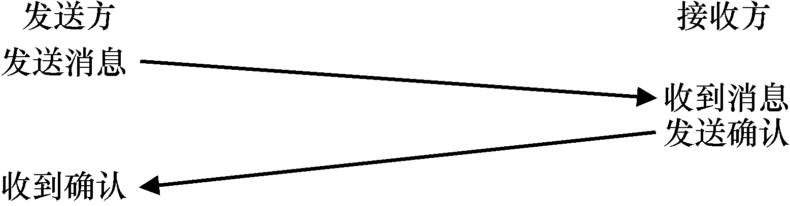
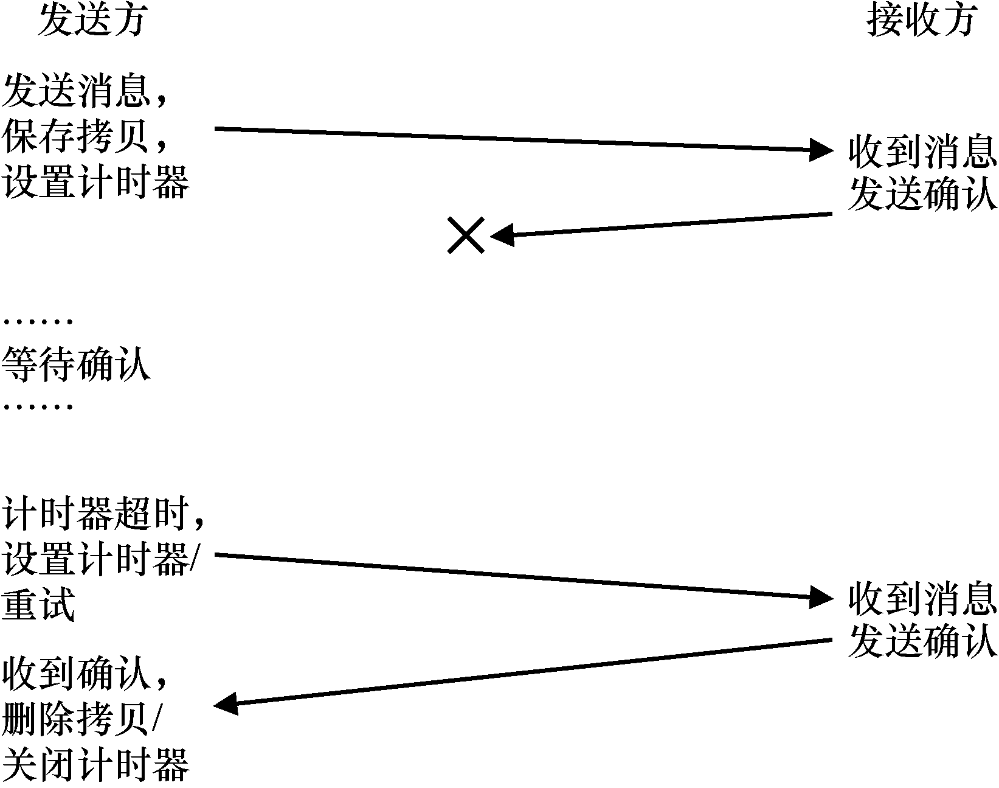
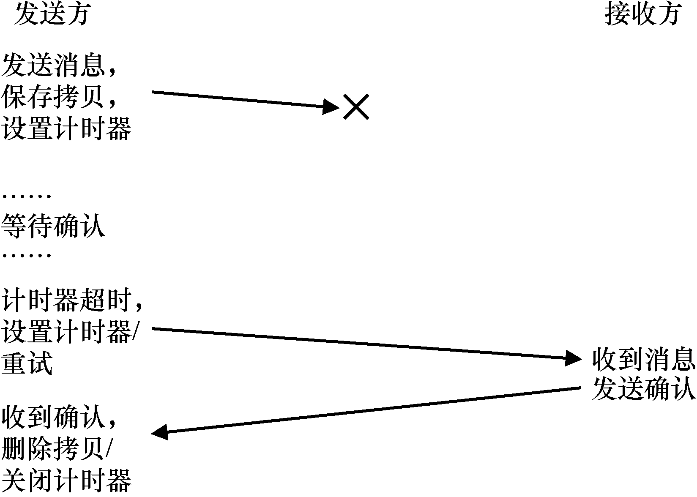

分布式系统改变了世界的面貌。当你的Web 浏览器连接到地球上其他地方的Web 服务器时，它就会参与似乎是简单形式的客户端/服务器（client/server）分布式系统。当你连上Google 和Facebook 等现代网络服务时，不只是与一台机器进行交互。在幕后，这些复杂的服务是利用大量机器（成千上万台）来提供的，每台机器相互合作，以提供站点的特定服务。因此，你应该清楚什么让研究分布式系统变得有趣。的确，它值得开一门课。在这里，我们只介绍一些主要议题。
构建分布式系统时会出现许多新的挑战。我们关注的主要是故障（failure）。机器、磁盘、网络和软件都会不时故障，因为我们不知道（并且可能永远不知道）如何构建“完美”的组件和系统。但是，构建一个现代的Web 服务时，我们希望它对客户来说就像永远不会失败一样。怎样才能完成这项任务？
关键问题：如何构建在组件故障时仍能工作的系统
如何用无法一直正常工作的部件，来构建能工作系统？这个基本问题应该让你想起，我们在RAID存储阵列中讨论的一些主题。然而，这里的问题往往更复杂，解决方案也是如此。
有趣的是，虽然故障是构建分布式系统的核心挑战，但它也代表着一个机遇。是的，机器会故障。但是机器故障这一事实并不意味着整个系统必须失败。通过聚集一组机器，我们可以构建一个看起来很少失败的系统，尽管它的组件经常出现故障。这种现实是分布式系统的核心优点和价值，也是为什么它们几乎支持了你使用的所有现代Web 服务，包括Google、Facebook 等。
提示：通信本身是不可靠的
几乎在所有情况下，将通信视为根本不可靠的活动是很好的。位讹误、关闭或无效的链接和机器，以及缺少传入数据包的缓冲区空间，都会导致相同的结果：数据包有时无法到达目的地。为了在这种不可靠的网络上建立可靠的服务，我们必须考虑能够应对数据包丢失的技术。
其他重要问题也存在。系统性能（performance）通常很关键。对于将分布式系统连接在一起的网络，系统设计人员必须经常仔细考虑如何完成给定的任务，尝试减少发送的消息数量，并进一步使通信尽可能高效（低延迟、高带宽）。
最后，安全（security）也是必要的考虑因素。连接到远程站点时，确保远程方是他们声称的那些人，这成为一个核心问题。此外，确保第三方无法监听或改变双方之间正在进行的通信，也是一项挑战。
本章将介绍分布式系统中最基本的新方面：通信（communication）。也就是说，分布式系统中的机器应该如何相互通信？我们将从可用的最基本原语（消息）开始，并在它们之上构建一些更高级的原语。正如上面所说的，故障将是重点：通信层应如何处理故障？
47.1 通信基础¶
现代网络的核心原则是，通信基本是不可靠的。无论是在广域Internet，还是Infiniband等局域高速网络中，数据包都会经常丢失、损坏，或无法到达目的地。
数据包丢失或损坏的原因很多。有时，在传输过程中，由于电气或其他类似问题，某些位会被翻转。有时，系统中的某个元素（例如网络链接或数据包路由器，甚至远程主机）会以某种方式损坏，或以其他方式无法正常工作。网络电缆确实会意外地被切断，至少有时候。
然而，更基本的是由于网络交换机、路由器或终端节点内缺少缓冲，而导致数据包丢失。具体来说，即使我们可以保证所有链路都能正常工作，并且系统中的所有组件（交换机、路由器、终端主机）都按预期启动并运行，仍然可能出现丢失，原因如下。想象一下数据包到达路由器。对于要处理的数据包，它必须放在路由器内某处的内存中。如果许多此类数据包同时到达，则路由器内的内存可能无法容纳所有数据包。此时路由器唯一的选择是丢弃（drop）一个或多个数据包。同样的行为也发生在终端主机上。当你向单台机器发送大量消息时，机器的资源很容易变得不堪重负，从而再次出现丢包现象。
因此，丢包是网络的基本现象。所以问题变成：应该如何处理丢包？
47.2 不可靠的通信层¶
一个简单的方法是：我们不处理它。由于某些应用程序知道如何处理数据包丢失，因此让它们用基本的不可靠消息传递层进行通信有时很有用，这是端到端的论点（end-to-end argument）的一个例子，人们经常听到（参见本章结尾处的补充）。这种不可靠层的一个很好的例子，就是几乎所有现代系统中都有的UDP/IP 网络栈。要使用UDP，进程使用套接字（socket）API 来创建通信端点（communication endpoint）。其他机器（或同一台机器上）的进程将UDP 数据报（datagram）发送到前面的进程（数据报是一个固定大小的消息，有最大大小）。
图47.1 和图47.2 展示了一个基于UDP/IP 构建的简单客户端和服务器。客户端可以向服务器发送消息，然后服务器响应回复。用这么少的代码，你就拥有了开始构建分布式系统所需的一切！
// client code
int main(int argc, char *argv[]) {
int sd = UDP_Open(20000);
struct sockaddr_in addr, addr2;
int rc = UDP_FillSockAddr(&addr, "machine.cs.wisc.edu", 10000);
char message[BUFFER_SIZE];
sprintf(message, "hello world");
rc = UDP_Write(sd, &addr, message, BUFFER_SIZE);
if (rc > 0) {
int rc = UDP_Read(sd, &addr2, buffer, BUFFER_SIZE);
}
return 0;
}
// server code
int main(int argc, char *argv[]) {
int sd = UDP_Open(10000);
assert(sd > -1);
while (1) {
struct sockaddr_in s;
char buffer[BUFFER_SIZE];
int rc = UDP_Read(sd, &s, buffer, BUFFER_SIZE);
if (rc > 0) {
char reply[BUFFER_SIZE];
sprintf(reply, "reply");
rc = UDP_Write(sd, &s, reply, BUFFER_SIZE);
}
}
return 0;
}
图47.1 UDP/IP 客户端/服务器代码示例
int UDP_Open(int port) {
int sd;
if ((sd = socket(AF_INET, SOCK_DGRAM, 0)) == -1) { return -1; }
struct sockaddr_in myaddr;
bzero(&myaddr, sizeof(myaddr));
myaddr.sin_family = AF_INET;
myaddr.sin_port = htons(port);
myaddr.sin_addr.s_addr = INADDR_ANY;
if (bind(sd, (struct sockaddr *) &myaddr, sizeof(myaddr)) == -1) {
close(sd);
return -1;
}
return sd;
}
int UDP_FillSockAddr(struct sockaddr_in *addr, char *hostName, int port) {
bzero(addr, sizeof(struct sockaddr_in));
addr->sin_family = AF_INET; // host byte order
addr->sin_port = htons(port); // short, network byte order
struct in_addr *inAddr;
struct hostent *hostEntry;
if ((hostEntry = gethostbyname(hostName)) == NULL) { return -1; }
inAddr = (struct in_addr *) hostEntry->h_addr;
addr->sin_addr = *inAddr;
return 0;
}
int UDP_Write(int sd, struct sockaddr_in *addr, char *buffer, int n) {
int addrLen = sizeof(struct sockaddr_in);
return sendto(sd, buffer, n, 0, (struct sockaddr *) addr, addrLen);
}
int UDP_Read(int sd, struct sockaddr_in *addr, char *buffer, int n) {
int len = sizeof(struct sockaddr_in);
return recvfrom(sd, buffer, n, 0, (struct sockaddr *) addr,
(socklen_t *) &len);
return rc;
}
图47.2 一个简单的UDP 库
UDP 是不可靠通信层的一个很好的例子。如果你使用它，就会遇到数据包丢失（丢弃），从而无法到达目的地的情况。发送方永远不会被告知丢失。但是，这并不意味着UDP 根本不能防止任何故障。例如，UDP 包含校验和（checksum），以检测某些形式的数据包损坏。
但是，由于许多应用程序只是想将数据发送到目的地，而不想考虑丢包，所以我们需要更多。具体来说，我们需要在不可靠的网络之上进行可靠的通信。
提示：使用校验和检查完整性
校验和是在现代系统中快速有效地检测讹误的常用方法。一个简单的校验和是加法：就是将一大块数据的字节加起来。当然，人们还创建了许多其他更复杂的校验和，包括基本的循环冗余校验码（CRC）、Fletcher 校验和以及许多其他方法[MK09]。
在网络中，校验和使用如下：在将消息从一台计算机发送到另一台计算机之前，计算消息字节的校验和。然后将消息和校验和发送到目的地。在目的地，接收器也计算传入消息的校验和。如果这个计算的校验和与发送的校验和匹配，则接收方可以确保数据在传输期间很可能没有被破坏。
校验和可以从许多不同的方面进行评估。有效性是一个主要考虑因素：数据的变化是否会导致校验和的变化？校验和越强，数据变化就越难被忽视。性能是另一个重要标准：计算校验和的成本是多少？遗憾的是，有效性和性能通常是不一致的，这意味着高质量的校验和通常很难计算。生活并不完美，又是这样。
47.3 可靠的通信层¶
为了构建可靠的通信层，我们需要一些新的机制和技术来处理数据包丢失。考虑一个简单的示例，其中客户端通过不可靠的连接向服务器发送消息。我们必须回答的第一个问题是：发送方如何知道接收方实际收到了消息？
我们要使用的技术称为确认（acknowledgment），或简称为ack。这个想法很简单：发送方向接收方发送消息，接收方然后发回短消息确

图47.3 消息加确认
认收到。图47.3 描述了该过程。
当发送方收到该消息的确认时，它可以放心接收方确实收到了原始消息。但是，如果没有收到确认，发送方应该怎么办？
为了处理这种情况，我们需要一种额外的机制，称为超时（timeout）。当发送方发送消息时，发送方现在将计时器设置为在一段时间后关闭。如果在此时间内未收到确认，则发送方断定该消息已丢失。发送方然后就重试（retry）发送，再次发送相同的消息，希望这次它能送达。要让这种方法起作用，发送方必须保留一份消息副本，以防它需要再次发送。超时和重试的组合导致一些人称这种方法为超时/重试（timeout/retry）。非常聪明的一群人，那些搞网络的，不是吗？图47.4 展示了一个例子。
遗憾的是，这种形式的超时/重试还不够。图47.5 展示了可能导致故障的数据包丢失示例。在这个例子中，丢失的不是原始消息，而是确认消息。从发送方的角度来看，情况似乎是相同的：没有收到确认，因此超时和重试是合适的。但是从接收方的角度来看，完全不同：现在相同的消息收到了两次！虽然可能存在这种情况，但通常情况并非如此。设想下载文件时，在下载过程中重复多个数据包，会发生什么。因此，如果目标是可靠的消息层，我们通常还希望保证接收方每个消息只接收一次（exactly once）。

原书第 423 页图示 2

图47.4 消息加确认：丢失的请求图47.5 消息加确认：丢失回答
为了让接收方能够检测重复的消息传输，发送方必须以某种独特的方式标识每个消息，并且接收方需要某种方式来追踪它是否已经看过每个消息。当接收方看到重复传输时，它只是简单地响应消息，但（严格地说）不会将消息传递给接收数据的应用程序。因此，发送方收到确认，但消息未被接收两次，保证了上面提到的一次性语义。
有许多方法可以检测重复的消息。例如，发送方可以为每条消息生成唯一的ID。接收方可以追踪它所见过的每个ID。这种方法可行，但它的成本非常高，需要无限的内存来跟踪所有ID。
一种更简单的方法，只需要很少的内存，解决了这个问题，该机制被称为顺序计数器（sequence counter）。利用顺序计数器，发送方和接收方就每一方将维护的计数器的起始值达成一致（例如1）。无论何时发送消息，计数器的当前值都与消息一起发送。此计数器值（N）作为消息的ID。发送消息后，发送方递增该值（到N + 1）。
接收方使用其计数器值，作为发送方传入消息的ID 的预期值。如果接收的消息（N）的ID 与接收方的计数器匹配（也是N），它将确认该消息，将其传递给上层的应用程序。在这种情况下，接收方断定这是第一次收到此消息。接收方然后递增其计数器（到N + 1），并等待下一条消息。
如果确认丢失，则发送方将超时，并重新发送消息N。这次，接收器的计数器更高（N+1），因此接收器知道它已经接收到该消息。因此它会确认该消息，但不会将其传递给应用程序。以这种简单的方式，顺序计数器可以避免重复。
最常用的可靠通信层称为TCP/IP，或简称为TCP。TCP 比上面描述的要复杂得多，包括处理网络拥塞的机制[VJ88]，多个未完成的请求，以及数百个其他的小调整和优化。如果你很好奇，请阅读更多相关信息。参加一个网络课程并很好地学习这些材料，这样更好。
47.4 通信抽象¶
有了基本的消息传递层，现在遇到了本章的下一个问题：构建分布式系统时，应该使用什么抽象通信？
提示：小心设置超时值
你也许可以从讨论中猜到，正确设置超时值，是使用超时重试消息发送的一个重要方面。如果超时太小，发送方将不必要地重新发送消息，从而浪费发送方的CPU 时间和网络资源。如果超时太大，则发送方为重发等待太长时间，因此会感到发送方的性能降低。所以，从单个客户端和服务器的角度来看，“正确”值就是等待足够长的时间来检测数据包丢失，但不能再长。
但是，分布式系统中通常不只有一个客户端和服务器，我们在后面的章节中会看到。在许多客户端发送到单个服务器的情况下，服务器上的数据包丢失可能表明服务器过载。如果是这样，则客户端可能会以不同的自适应方式重试。例如，在第一次超时之后，客户端可能会将其超时值增加到更高的量，可能是原始值的两倍。这种指数倒退（exponential back-off）方案，在早期的Aloha 网络中实施，并在早期的以太网[A70]中采用，避免了资源因过量重发而过载的情况。健壮的系统力求避免这种过载。
多年来，系统社区开发了许多方法。其中一项工作涉及操作系统抽象，将其扩展到在分布式环境中运行。例如，分布式共享内存（Distributed Shared Memory，DSM）系统使不同机器上的进程能够共享一个大的虚拟地址空间[LH89]。这种抽象将分布式计算变成貌似多线程应用程序。唯一的区别是这些线程在不同的机器上运行，而不是在同一台机器上的不同处理器上。
大多数DSM 系统的工作方式是通过操作系统的虚拟内存系统。在一台计算机上访问页面时，可能会发生两种情况。在第一种（最佳）情况下，页面已经是机器上的本地页面，因此可以快速获取数据。在第二种情况下，页面目前在其他机器上。发生页面错误，页面错误处理程序将消息发送到其他计算机以获取页面，将其装入请求进程的页表中，然后继续执行。
由于许多原因，这种方法今天并未广泛使用。DSM 最大的问题是它如何处理故障。例如，想象一下，如果机器出现故障。那台机器上的页面会发生什么？如果分布式计算的数据结构分布在整个地址空间怎么办？在这种情况下，这些数据结构的一部分将突然变得不可用。如果部分地址空间丢失，处理故障会很难。想象一下链表，其中下一个指针指向已经消失的地址空间的一部分。
另一个问题是性能。人们通常认为，在编写代码时，访问内存的成本很低。在DSM 系统中，一些访问是便宜的，但是其他访问导致页面错误和远程机器的昂贵提取。因此，这种DSM 系统的程序员必须非常小心地组织计算，以便几乎不发生任何通信，从而打败了这种方法的主要出发点。虽然在这个领域进行了大量研究，但实际影响不大。没有人用DSM构建可靠的分布式系统。
47.5 远程过程调用（RPC）¶
虽然最终结果表明，操作系统抽象对于构建分布式系统来说是一个糟糕的选择，但编程语言（PL）抽象要有意义得多。最主要的抽象是基于远程过程调用（Remote Procedure Call），或简称RPC [BN84]1。
远程过程调用包都有一个简单的目标：使在远程机器上执行代码的过程像调用本地函数一样简单直接。因此，对于客户端来说，进行一个过程调用，并在一段时间后返回结果。服务器只是定义了一些它希望导出的例程。其余的由RPC 系统处理，RPC 系统通常有两部分：存根生成器（stub generator，有时称为协议编译器，protocol compiler）和运行时库（run-time library）。接下来将更详细地介绍这些部分。
存根生成器¶
存根生成器的工作很简单：通过自动化，消除将函数参数和结果打包成消息的一些痛苦。这有许多好处：通过设计避免了手工编写此类代码时出现的简单错误。此外，存根生成器也许可以优化此类代码，从而提高性能。
这种编译器的输入就是服务器希望导出到客户端的一组调用。从概念上讲，它可能就像这样简单：
interface {
int func1(int arg1);
int func2(int arg1, int arg2);
};
存根生成器接受这样的接口，并生成一些不同的代码片段。对于客户端，生成客户端存根（client stub），其中包含接口中指定的每个函数。希望使用此RPC 服务的客户端程序将链接此客户端存根，调用它以进行RPC。
在内部，客户端存根中的每个函数都执行远程过程调用所需的所有工作。对于客户端，代码只是作为函数调用出现（例如，客户端调用func1(x)）。在内部，func1()的客户端存根中的代码执行此操作：
创建消息缓冲区。消息缓冲区通常只是某种大小的连续字节数组。
将所需信息打包到消息缓冲区中。该信息包括要调用的函数的某种标识符，以及
函数所需的所有参数（例如，在上面的示例中，func1 需要一个整数）。将所有这
些信息放入单个连续缓冲区的过程，有时被称为参数的封送处理（marshaling）或
消息的序列化（serialization）。
将消息发送到目标RPC 服务器。与RPC 服务器的通信，以及使其正常运行所需的
所有细节，都由RPC 运行时库处理，如下所述。
等待回复。由于函数调用通常是同步的（synchronous），因此调用将等待其完成。
解包返回代码和其他参数。如果函数只返回一个返回码，那么这个过程很简单。
但是，较复杂的函数可能会返回更复杂的结果（例如，列表），因此存根可能也
需要对它们解包。此步骤也称为解封送处理（unmarshaling ）或反序列化
（deserialization）。
返回调用者。最后，只需从客户端存根返回到客户端代码。
对于服务器，也会生成代码。在服务器上执行的步骤如下：
解包消息。此步骤称为解封送处理（unmarshaling）或反序列化（deserialization），
将信息从传入消息中取出。提取函数标识符和参数。
调用实际函数。终于，我们到了实际执行远程函数的地方。RPC 运行时调用ID 指
定的函数，并传入所需的参数。
打包结果。返回参数被封送处理，放入一个回复缓冲区。
发送回复。回复最终被发送给调用者。
在存根编译器中还有一些其他重要问题需要考虑。第一个是复杂的参数，即一个包如何发送复杂的数据结构？例如，调用write()系统调用时，会传入3 个参数：一个整数文件描述符，一个指向缓冲区的指针，以及一个大小，指示要写入多少字节（从指针开始）。如果向RPC 包传入了一个指针，它需要能够弄清楚如何解释该指针，并执行正确的操作。通常，这是通过众所周知的类型（例如，用于传递给定大小的数据块的缓冲区t，RPC 编译器可以理解），或通过使用更多信息注释数据结构来实现的，从而让编译器知道哪些字节需要序列化。
另一个重要问题是关于并发性的服务器组织方式。一个简单的服务器只是在一个简单的循环中等待请求，并一次处理一个请求。但是，你可能已经猜到，这可能非常低效。如果一个RPC 调用阻塞（例如，在I/O 上），就会浪费服务器资源。因此，大多数服务器以某种并发方式构造。常见的组织方式是线程池（thread pool）。在这种组织方式中，服务器启动时会创建一组有限的线程。消息到达时，它被分派给这些工作线程之一，然后执行RPC调用的工作，最终回复。在此期间，主线程不断接收其他请求，并可能将其发送给其他工作线程。这样的组织方式支持服务器内并发执行，从而提高其利用率。标准成本也会出现，主要是编程复杂性，因为RPC 调用现在可能需要使用锁和其他同步原语来确保它们的正确运行。
运行时库¶
运行时库处理RPC 系统中的大部分繁重工作。这里处理大多数性能和可靠性问题。接下来讨论构建此类运行时层的一些主要挑战。
我们必须克服的首要挑战之一，是如何找到远程服务。这个命名（naming）问题在分布式系统中很常见，在某种意义上超出了我们当前讨论的范围。最简单的方法建立在现有命名系统上，例如，当前互联网协议提供的主机名和端口号。在这样的系统中，客户端必须知道运行所需RPC 服务的机器的主机名或IP 地址，以及它正在使用的端口号（端口号就是在机器上标识发生的特定通信活动的一种方式，允许同时使用多个通信通道）。然后，协议套件必须提供一种机制，将数据包从系统中的任何其他机器路由到特定地址。有关命名的详细讨论，请阅读Grapevine 的论文，或关于互联网上的DNS 和名称解析，或者阅读Saltzer和Kaashoek 的书[SK09]中的相关章节，这样更好。
一旦客户端知道它应该与哪个服务器通信，以获得特定的远程服务，下一个问题是应该构建RPC 的传输级协议。具体来说，RPC 系统应该使用可靠的协议（如TCP/IP），还是建立在不可靠的通信层（如UDP/IP）上？
天真的选择似乎很容易：显然，我们希望将请求可靠地传送到远程服务器，显然，我们希望能够可靠地收到回复。因此，我们应该选择TCP 这样的可靠传输协议，对吗？
遗憾的是，在可靠的通信层之上构建RPC 可能会导致性能的低效率。回顾上面的讨论，可靠的通信层如何工作：确认和超时/重试。因此，当客户端向服务器发送RPC 请求时，服务器以确认响应，以便调用者知道收到了请求。类似地，当服务器将回复发送到客户端时，客户端会对其进行确认，以便服务器知道它已被接收。在可靠的通信层之上构建请求/响应协议（例如RPC），必须发送两个“额外”消息。
因此，许多RPC 软件包都建立在不可靠的通信层之上，例如UDP。这样做可以实现更高效的RPC 层，但确实增加了为RPC 系统提供可靠性的责任。RPC 层通过使用超时/重试和确认来实现所需的责任级别，就像我们上面描述的那样。通过使用某种形式的序列编号，通信层可以保证每个RPC 只发生一次（在没有故障的情况下），或者最多只发生一次（在发生故障的情况下）。
其他问题¶
还有一些其他问题，RPC 的运行时也必须处理。例如，当远程调用需要很长时间才能完成时，会发生什么？鉴于我们的超时机制，长时间运行的远程调用可能被客户端认为是故障，从而触发重试，因此需要小心。一种解决方案是在没有立即生成回复时使用显式确认（从接收方到发送方）。这让客户端知道服务器收到了请求。然后，经过一段时间后，客户端可以定期询问服务器是否仍在处理请求。如果服务器一直说“是”，客户端应该感到高兴并继续等待（毕竟，有时过程调用可能需要很长时间才能完成执行）。
运行时还必须处理具有大参数的过程调用，大于可以放入单个数据包的过程。一些底层的网络协议提供这样的发送方分组（fragmentation，较大的包分成一组较小的包）和接收方重组（reassembly，较小的部分组成一个较大的逻辑整体）。如果没有，RPC 运行时可能必须自己实现这样的功能。有关详细信息，请参阅Birrell 和Nelson 的优秀RPC 论文[BN84]。
许多系统要处理的一个问题是字节序（byte ordering）。你可能知道，有些机器存储值时采用所谓的大端序（big endian），而其他机器采用小端序（little endian）。大端序存储从最高有效位到最低有效位的字节（比如整数），非常像阿拉伯数字。小端序则相反。两者对存储数字信息同样有效。这里的问题是如何在不同字节序的机器之间进行通信。
补充：端到端的论点
端到端的论点（end-to-end argument）表明，系统中的最高层（通常是“末端”的应用程序）最终是分层系统中唯一能够真正实现某些功能的地方。在Saltzer 等人的标志性论文中，他们通过一个很好的例子来证明这一点：两台机器之间可靠的文件传输。如果要将文件从机器A 传输到机器B，并确保最终在B 上的字节与从A 开始的字节完全相同，则必须对此进行“端到端”检查。较低级别的可靠机制，例如在网络或磁盘中，不提供这种保证。
与此相对的是一种方法，尝试通过向系统的较低层添加可靠性，来解决可靠文件传输问题。例如，假设我们构建了一个可靠的通信协议，并用它来构建可靠的文件传输。通信协议保证发送方发送的每个字节都将由接收方按顺序接收，例如使用超时/重试、确认和序列号。遗憾的是，使用这样的协议并不能实现可靠的文件传输。想象一下，在通信发生之前，发送方内存中的字节被破坏，或者当接收方将数据写入磁盘时发生了一些不好的事情。在这些情况下，即使字节在网络上可靠地传递，文件传输最终也不可靠。要构建可靠的文件传输，必须包括端到端的可靠性检查，例如，在整个传输完成后，读取接收方磁盘上的文件，计算校验和，并将该校验和与发送方文件的校验和进行比较。
按照这个准则的推论是，有时候，较低层提供额外的功能确实可以提高系统性能，或在其他方面优化系统。因此，不应该排除在系统中较低层的这种机制。实际上，你应该小心考虑这种机制的实用性，考虑它最终对整个系统或应用程序的作用。
RPC 包通常在其消息格式中提供明确定义的字节序，从而处理该问题。在Sun 的RPC包中，XDR（eXternal Data Representation，外部数据表示）层提供此功能。如果发送或接收消息的计算机与XDR 的字节顺序匹配，就会按预期发送和接收消息。但是，如果机器通信具有不同的字节序，则必须转换消息中的每条信息。因此，字节顺序的差异可以有一点性能成本。
最后一个问题是：是否向客户端暴露通信的异步性质，从而实现一些性能优化。具体来说，典型的RPC 是同步（synchronously）的，即当客户端发出过程调用时，它必须等待过程调用返回，然后再继续。因为这种等待可能很长，而且因为客户端可能正在执行其他工作，所以某些RPC 包让你能够异步（asynchronously）地调用RPC。当发出异步RPC 时，RPC 包发送请求并立即返回。然后，客户端可以自由地执行其他工作，例如调用其他RPC，或进行其他有用的计算。客户端在某些时候会希望看到异步RPC 的结果。因此它再次调用RPC 层，告诉它等待未完成的RPC 完成，此时可以访问返回的结果。
47.6 小结¶
我们介绍了一个新主题，分布式系统及其主要问题：如何处理故障现在是常见事件。正如人们在Google 内部所说的那样，当你只有自己的台式机时，故障很少见。当你拥有数千台机器的数据中心时，故障一直在发生。所有分布式系统的关键是如何处理故障。
我们还看到，通信是所有分布式系统的核心。在远程过程调用（RPC）中可以看到这种通信的常见抽象，它使客户端能够在服务器上进行远程调用。RPC 包处理所有细节，包括超时/重试和确认，以便提供一种服务，很像本地过程调用。
真正理解RPC 包的最好方法，当然是亲自使用它。Sun 的RPC 系统使用存根编译器rpcgen，它是很常见的，在当今的许多系统上可用，包括Linux。尝试一下，看看所有这些麻烦到底是怎么回事。
参考资料¶
[A70]“The ALOHA System — Another Alternative for Computer Communications”Norman Abramson The 1970 Fall Joint Computer Conference ALOHA 网络开创了网络中的一些基本概念，包括指数倒退和重传。多年来，这些已成为共享总线以太网网络通信的基础。
[BN84]“Implementing Remote Procedure Calls”Andrew D. Birrell, Bruce Jay Nelson ACM TOCS, Volume 2:1, February 1984基础RPC 系统，其他所有理论都基于此。是的，它是我们在Xerox PARC 的朋友们的另一项开创性努力的结果。
[MK09]“The Effectiveness of Checksums for Embedded Control Networks”Theresa C. Maxino and Philip J.Koopman IEEE Transactions on Dependable and Secure Computing, 6:1, January ’09对基本校验和机制的很好的概述，包括它们之间的一些性能和健壮性比较。
[LH89]“Memory Coherence in Shared Virtual Memory Systems”Kai Li and Paul Hudak ACM TOCS, 7:4, November 1989本文介绍了通过虚拟内存来实现基于软件的共享内存。这是一个有趣的想法，但结果没有坚持下去，或者不太好。
[SK09]“Principles of Computer System Design”Jerome H. Saltzer and M. Frans Kaashoek Morgan-Kaufmann,2009一本关于系统的优秀图书，也是每个书架的必备书。这是我们看到的关于命名的几个优质的讨论内容之一。
[SRC84]“End-To-End Arguments in System Design”Jerome H. Saltzer, David P. Reed, David D. Clark ACM TOCS, 2:4, November 1984关于分层、抽象，以及功能必须最终放在计算机系统中的讨论。
[VJ88]“Congestion Avoidance and Control”Van Jacobson SIGCOMM ’88关于客户端应如何调整，以感知网络拥塞的开创性论文。绝对是互联网背后的关键技术之一，所有认真对待系统的人必读。
-
在现代编程语言中，我们可能会说远程方法调用（RMI），但谁会喜欢这些语言，还有它们所有的花哨对象？ ↩